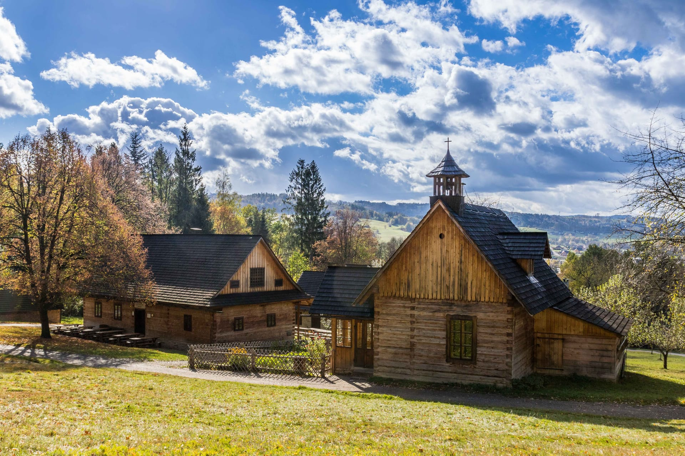
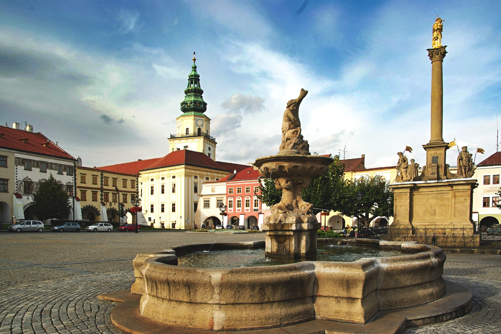

La Región de Zlín es una unidad administrativa (kraj) de la República Checa, situada mayoritariamente en la región histórica de Moravia. La capital es Zlín.
El museo de Valaquia en Rožnov
La capital administrativa de la región es la ciudad homonima de Zlín. La ciudad construida a la perfección en el estilo del funcionalismo es una muestra singular, y no solo en Chequia, del urbanismo y de la arquitectura moderna de la época entre guerras.
Castillo del arzobispo en Kroměříž
Dentro de esta región tambien encontramos las ciudad de Kroměříž, con una población estimada a principio del año 2018 de 28.897 habitantes.